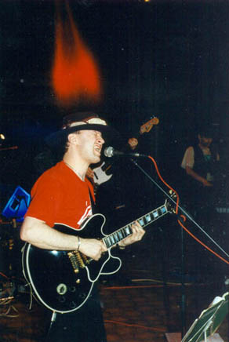

Середина семидесятых для нынешних молодых людей - времена практически былинные. Высоцкий и Джон Леннон были живы, а будущие SEX PISTOLS еще не были знакомы друг с другом. На виду тогда в столице было групп двадцать, а популярных и того меньше. Две самые модные группы назывались МАШИНА ВРЕМЕНИ и УДАЧНОЕ ПРИОБРЕТЕНИЕ. Дружил я и с теми, и с другими, концерты посещал исправно, но МАШИНУ ВРЕМЕНИ, скорее, уважал, а УДАЧНОЕ ПРИОБРЕТЕНИЕ, скорее, любил.Их было трое, вместе они играли с 1970 года и очень правильно выглядели. Барабанщик Михаил "Петрович" Соколов был не по годам лысоват, с ухоженными усами и производил впечатление несомненного ветерана-профессионала высшей пробы. Бас-гитарист Владимир "Леонардыч" Матецкий, напротив, был моложавым модником: всегда продуманно одет и популярно причесан. Что до гитариста-вокалиста Лехи "Уайта" Белова, то в противовес "профи" Петровичу и "джентльмену" Леонардычу, он олицетворял собой отвяз, беспредел и стихийный напор рок-н-ролла. На гитаре он играл всем телом, а также лицом, вытворяя чудеса мимики и жеста в эмоциональном порыве. Много лет спустя, мы увидели живого Би Би Кинга, отсмотрели видеозаписи других иностранных героев и можно было только поразиться тому, насколько похожи они были по пластике, энергетике, даже выражению глаз. Леха Белов недостаточно владел английским языком - но язык блюза он схватил на лету и интуитивно овладел им в совершенстве. Да, "удачники" играли блюз и были в этом отношении самой последовательной группой в Москве: "хард", "арт" и битловщина, доминировавшие в то время, на репертуаре группы Белова отразились в минимальной степени. Но сказать, что они играли чистый традиционный блюз тоже было бы неверно. Сам Уайт определял стиль ансамбля как "блюз-рок": сочетание черного "городского" блюза (его чикагской разновидности) и белого психоделического рока. Символично, что настольной пластинкой у ПРИОБРЕТЕНИЯ стал замечательный двойной альбом "Blues Jam at Chess", где команда молодых английских блюзменов во главе с Питером Грином играет в студии со сборной старых чикагских мастеров.
Самая горячая группа в Москве, УДАЧНОЕ ПРИОБРЕТЕНИЕ выступала довольно часто (в кафе, фойе, актовых залах институтов, фабричных клубах и общежитиях) и всегда при немыслимых аншлагах. Стас Намин, единственный тогда "рокер в официозе", лишившись своей группы, временно ангажировал Белова и компанию: под вывеской "Группа Стаса Намина" они записали несколько песен, в том числе хит "Старый рояль" и собрали лауреатские звания на ряде региональных фестивалей.
Во второй половине 70-х и стилистика, и состав "удачников" стали раздаваться вширь. Музыка сохранила ритм-энд-блюзовую основу, но стала сложнее и разнообразнее: в репертуаре появились джаз-роковые пьесы, сочинения Фрэнка Заппы и даже несколько собственных вокальных (на английском) и инструментальных композиций в таком же "замороченном" плане. Новые музыканты: Алик Микоян - акустическая гитара, гармоника, вокал, Алик "дедушка Оглы" Гусейнов - сопрано-сакс, Игорь Саульский - клавишные. Но при том, что группа была в прекрасной форме и звучала все мощнее, интерес к ней начал постепенно угасать. Связано это было с тем, что к концу 70-х линия МАШИНЫ ВРЕМЕНИ, главных друзей-конкурентов УДАЧНОГО ПРИОБРЕТЕНИЯ, стала явно преобладать: родной язык и острые тексты теперь волновали аудиторию больше, чем язык иностранный и острая музыка - Сегодня Михаил Петрович Соколов продолжает руководить столичными блюз-ансамблями, Владимир Леонардыч Матецкий стал популярнейшим композитором, автором сотен хитов, Алик Гусейнов переквалифицировался в парикмахера и уехал жить в США, Алик Микоян по-прежнему поет блюз, Игорь Саульский занимается бизнесом в калифорнии. Наконец, Леха Белов стал Беловым-старшим, а сын, Белов-младший, играет с ним на клавишных в группе..."Удачное приобретение". Диск этой группы мы наконец получили в подарок. И это - удача.
Артемий Троицкий
(журнал "Music Box", номер 2(7) - 1997)
Борис Булкин, STAINLESS BLUES BAND: Алексей Белов, сам того не ведая, принял в моей музыкальной судьбе большое участие, если не самое главное. Если бы не он, я бы разминулся с блюзом. Он открыл для меня этот путь. Кажется, в 75-м году я попал на первый в своей жизни настоящий "сейшн" - так тогда называли рок-концерты. Было это в ДК завода Ильича, на сцене которого и выступала группа УДАЧНОЕ ПРИОБРЕТЕНИЕ: Матецкий, Уайт, Алик Микоян, а за барабанами - "старейшина" Петрович. Помню, у Петровича порвался барабан, и он стучал по альтам... Сами они таких подробностей уже не помнят, а я пронес то ощущение от первого рок-концерта через всю жизнь. До этого я слышал только ПЕСНЯРОВ, а это был настоящий рок-концерт, как те, которые слушал, когда ловил "Голос Америки" и польские радиостанции. Увиденное и услышанное потрясло меня настолько, что я взял гитару и не расстаюсь с ней до сих пор. Алексей дал мне много советов, рассказывал, что и как - но это было потом. Рад, что наконец-то ему удалось выпустить альбом. Очень хорошая и профессиональная запись, сделанная заслуженным музыкантом. Жизнь блюзмена у нас особенно тяжела, и замечательно, что даже спустя столько лет ему удалось прорваться и сделать для всех этот блюз. Какие-то мелкие модные стили приходят и уходят, а такое глобальное, как блюз, остается. И это тем более важно, что наш слушатель этим обделен. Уайт - один из тех, кого смело можно назвать звездой. Он не из тех самозванцев, кто через два-три года объявляет себя звездами, а еще через полгода падают с небосклона. Отличительный признак звезд - они светят долго. 30 лет блюза - это кое-что значит!
(журнал "Music Box", номер 2(7) - 1997)
Желающие приобрести компакт диски с записью концерта "Удачного Приобретения" 1974 года и альбома "Три Белова", могут обращаться по адресу whiteson@hotbox.ru